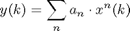

NoninearityClass
Parent class: NonIdealityClass. Nonlinearity is a common impediment for any RF component, and it mainly due to finit gain in the circuits.

Properties
Methods
a1
Voltage gain of the first order therm (in linear metrics). Default value is 1. When gain is specified in dB then set the value of a1 to:
When power gain is specified (in dBm) then set a1 to:
a3
Voltage gain of the third order therm (in linear metrics). Default value is 0.
aisat
Maximum voltage at the RF component input.
aisat
Maximum voltage at the RF component output.
constructor
obj=NonlinearityClass;
The constructor calls for the update member of the class that updates the values of aisat and aosat.
process
obj.process(signal)
The input signal is recommended to be an object of SignalClass. The process member function implements the effect of nonlinearity.
update
obj.update;
Member update is executed when the object is constructed, a1 or a3 are accessed. It computes the input and output saturation voltages: